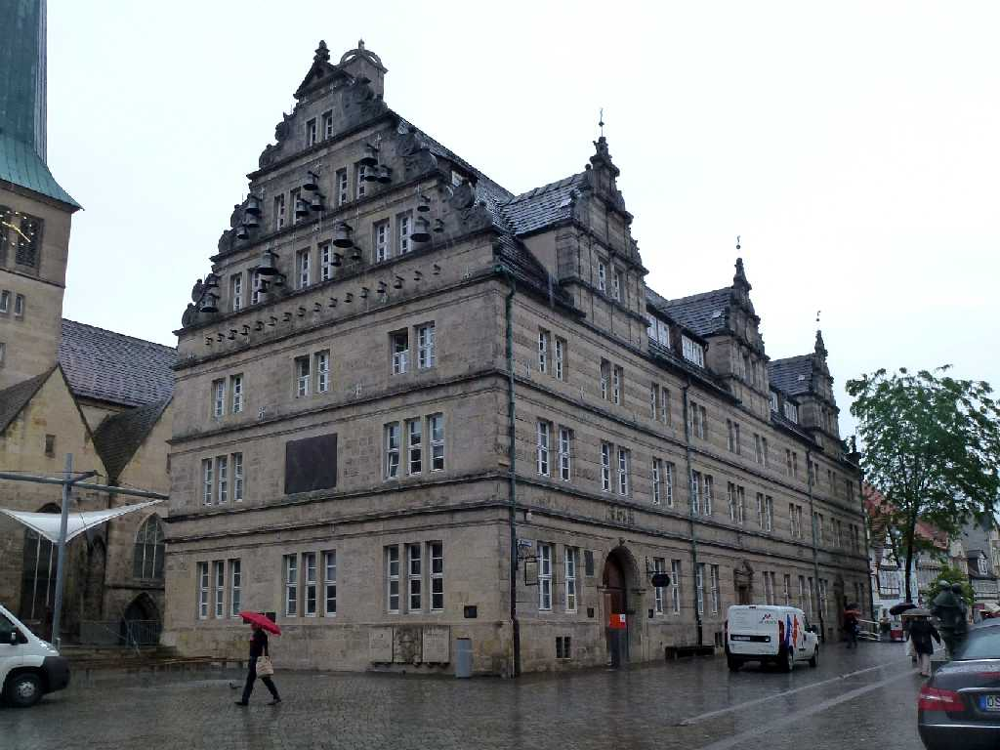
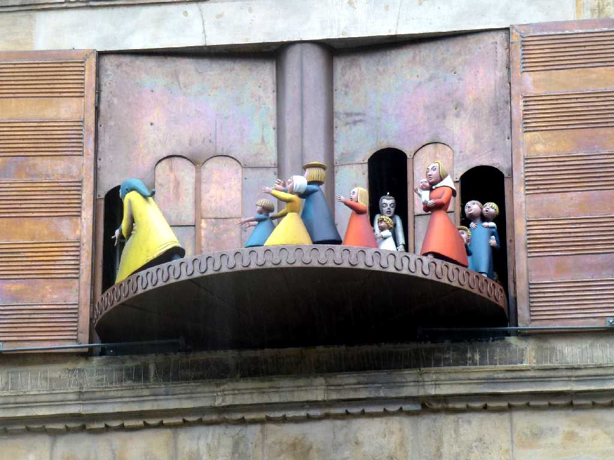
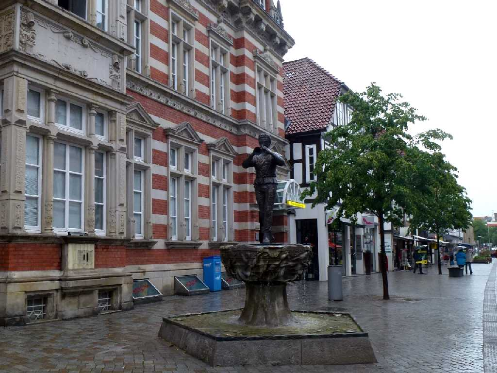
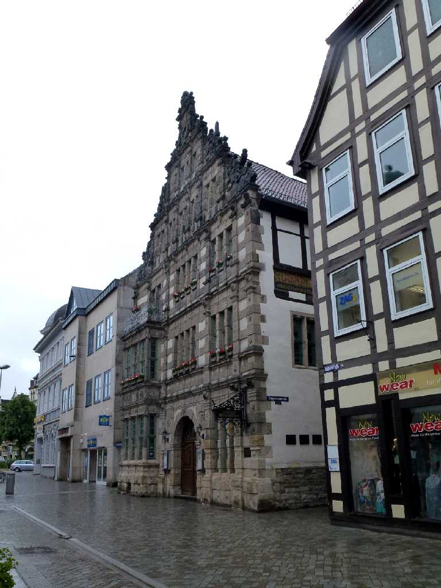
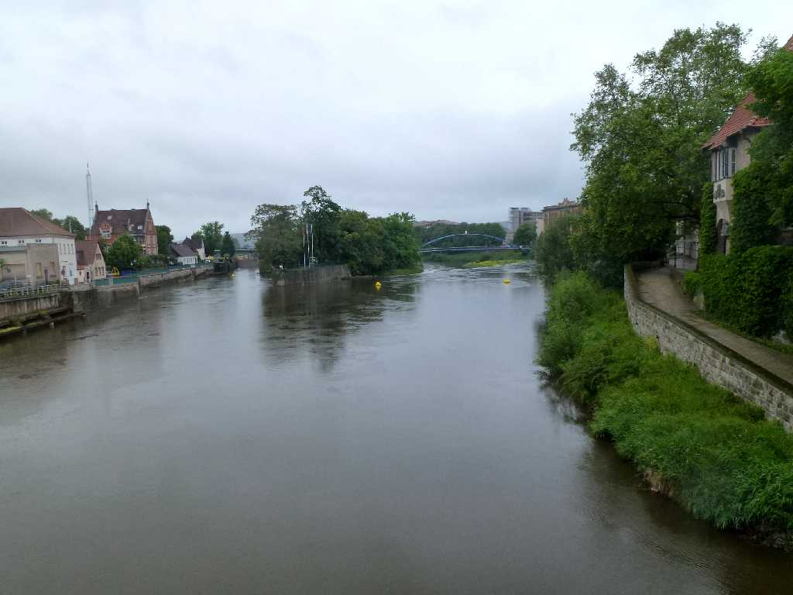
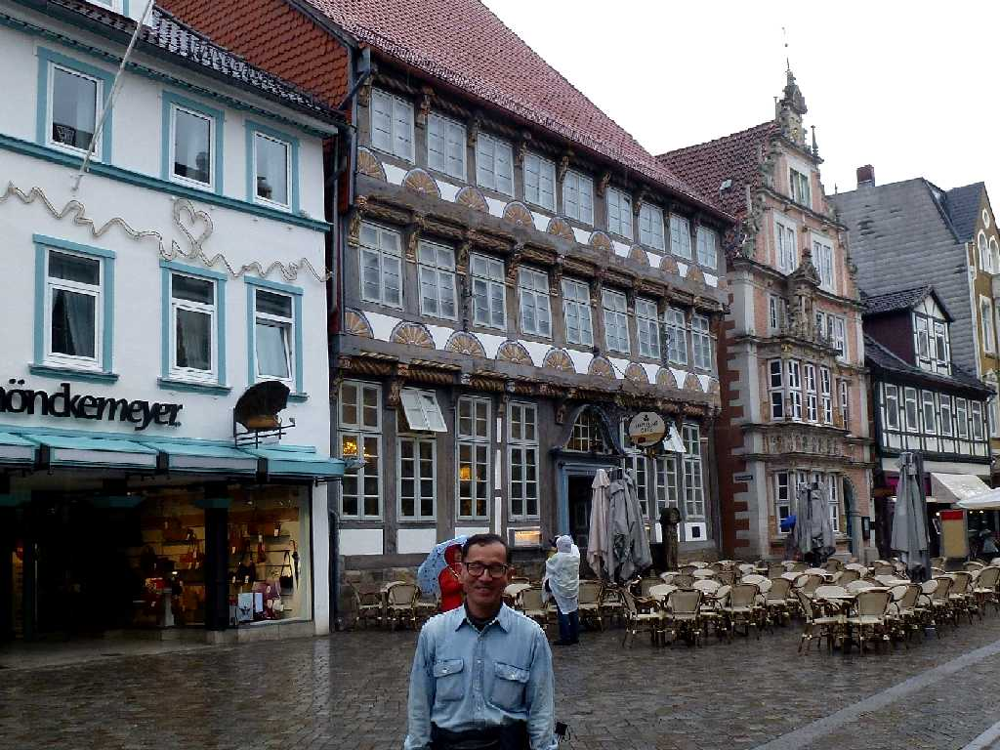

Hochzeitshaus Hameln
教会に隣接した結婚の承認を受ける結婚式の家

Glockenspiel Hochzeitshaus
結婚式の家にある仕掛け時計

Rattenfänger Osterstraße
市庁舎前のハーメルンの笛吹き男像

Rattenfangerhause Osterstraße
１６０２年に創られたヴェザールネサンス様式の家でハーメルンの笛吹き男の家と称されるレストラン 昼食は名物ネズミのしっぽ料理

Weser Fluß
笛吹き男の笛の音で大量に発生したネズミが水没したと云われるヴェザー川

May 28 2014 Osterstraße
ハーメルン旧市街のメインストリートのオスター通りはルネッサンス様式の家並みが美しい